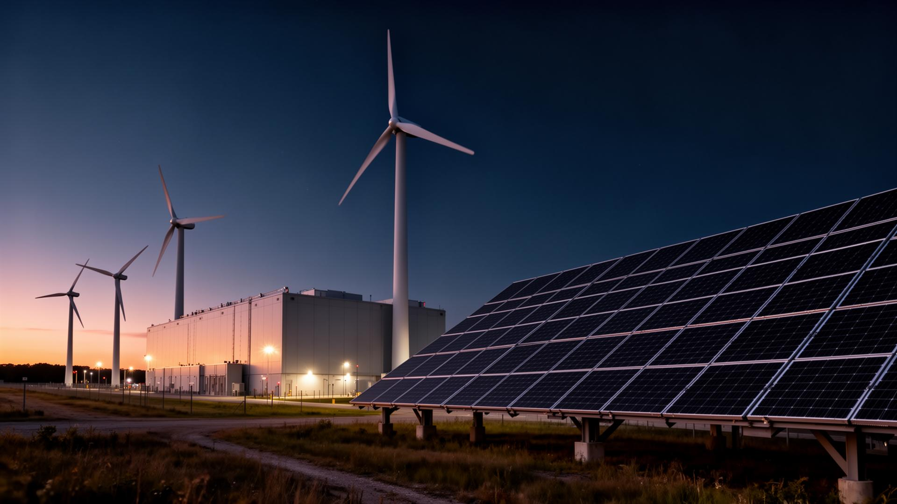

Our Expertise
Deep specialisation across five core verticals of the Data Center ecosystem.
We place project managers, electrical and mechanical engineers, and commissioning specialists across new builds and expansions worldwide. From greenfield hyperscale to retrofit colocation, we find the talent that delivers on time and on spec.
Data Center operations demand precision and reliability. We recruit critical facilities engineers, Data Center technicians, and facilities managers who understand the zero-downtime environment and can maintain the highest standards of operational excellence.
As hyperscale and AI workloads accelerate, the need for specialist cloud and network engineers has never been greater. We recruit across cloud platforms including Google Cloud, Amazon Web Services, and Microsoft Azure.
From VP of Operations to Chief Technology Officer, we conduct confidential, targeted searches for the leaders who will shape the future of your organisation. Our executive search process combines deep industry knowledge with rigorous assessment.

We recruit commercial leaders and sustainability specialists who drive revenue growth while advancing environmental goals. From sales directors to energy efficiency consultants, including placements supporting Schneider Electric and similar partners.
Whichever side of the table you're on, we know the Data Center market better than anyone.